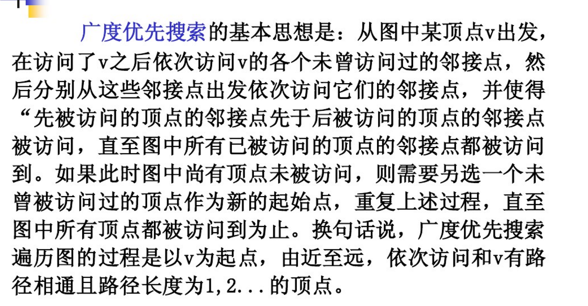
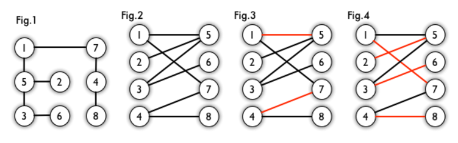
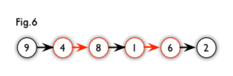

图由顶点(vertex), 边(edge)组成，所以常用(V,E)来表示图。 图分为两种：有向图和无向图。
图的表示方法

QQ截图20170406150818.png
邻接矩阵表示法
邻接矩阵表示就是一个二维的矩阵V[i][j] V[i][j] = 1 表示有一条边从节点i连接节点j 
邻接表表示法
邻接表就是把每个节点直接连接的节点都列举出来。 

图的遍历方法
深度优先遍历
深度优先遍历用递归实现，借助栈的结构。 深度优先搜索的C++语言的实现，图的存储使用邻接矩阵的方式。
广度优先遍历
广度优先遍历一般使用队列结构，适用于解决最短路径问题。一般遍历解的状态都是使用 深度优先遍历，因为深度优先遍历可以使用递归函数实现，比较方便。   广度优先搜索的C++语言的实现，图的存储使用邻接矩阵的方式。
广度优先搜索的C++语言的实现，图的存储使用邻接矩阵的方式。
图相关的经典问题
二分图的判定
给一个图的顶点着色，相邻的顶点着不同颜色，需要的最少的颜色数，叫做最小着色数。 最小着色数是2的图叫做二分图。
简单来说，如果图中点可以被分为两组，并且使得所有边都跨越组的边界，则这就是一个二分图。准确地说：把一个图的顶点划分为两个不相交集 U 和V ，使得每一条边都分别连接U、V中的顶点。如果存在这样的划分，则此图为一个二分图。二分图的一个等价定义是：不含有「含奇数条边的环」的图。图 1 是一个二分图。为了清晰，我们以后都把它画成图 2 的形式。 
判断一个图是否是二分图，只需要从任意一个节点开始，遍历这个图，给当前节点和相邻节点然不同的色，然后判断有没有相邻的节点同色即可。
二分图的最大匹配和完美匹配
http://www.renfei.org/blog/bipartite-matching.html
最大匹配：一个图所有匹配中，所含匹配边数最多的匹配，称为这个图的最大匹配。图 4 是一个最大匹配，它包含 4 条匹配边。
完美匹配：如果一个图的某个匹配中，所有的顶点都是匹配点，那么它就是一个完美匹配。图 4 是一个完美匹配。显然，完美匹配一定是最大匹配（完美匹配的任何一个点都已经匹配，添加一条新的匹配边一定会与已有的匹配边冲突）。但并非每个图都存在完美匹配。
举例来说：如下图所示，如果在某一对男孩和女孩之间存在相连的边，就意味着他们彼此喜欢。是否可能让所有男孩和女孩两两配对，使得每对儿都互相喜欢呢？图论中，这就是完美匹配问题。如果换一个说法：最多有多少互相喜欢的男孩/女孩可以配对儿？这就是最大匹配问题。  基本概念讲完了。求解最大匹配问题的一个算法是匈牙利算法，下面讲的概念都为这个算法服务。 交替路：从一个未匹配点出发，依次经过非匹配边、匹配边、非匹配边…形成的路径叫交替路。
基本概念讲完了。求解最大匹配问题的一个算法是匈牙利算法，下面讲的概念都为这个算法服务。 交替路：从一个未匹配点出发，依次经过非匹配边、匹配边、非匹配边…形成的路径叫交替路。
增广路：从一个未匹配点出发，走交替路，如果途径另一个未匹配点（出发的点不算），则这条交替路称为增广路（agumenting path）。例如，图 5 中的一条增广路如图 6 所示（图中的匹配点均用红色标出）：  增广路有一个重要特点：非匹配边比匹配边多一条。因此，研究增广路的意义是改进匹配。只要把增广路中的匹配边和非匹配边的身份交换即可。由于中间的匹配节点不存在其他相连的匹配边，所以这样做不会破坏匹配的性质。交换后，图中的匹配边数目比原来多了 1 条。
我们可以通过不停地找增广路来增加匹配中的匹配边和匹配点。找不到增广路时，达到最大匹配（这是增广路定理）。匈牙利算法正是这么做的。在给出匈牙利算法 DFS 和 BFS 版本的代码之前，先讲一下匈牙利树。
匈牙利树一般由 BFS 构造（类似于 BFS 树）。从一个未匹配点出发运行 BFS（唯一的限制是，必须走交替路），直到不能再扩展为止。例如，由图 7，可以得到如图 8 的一棵 BFS 树：